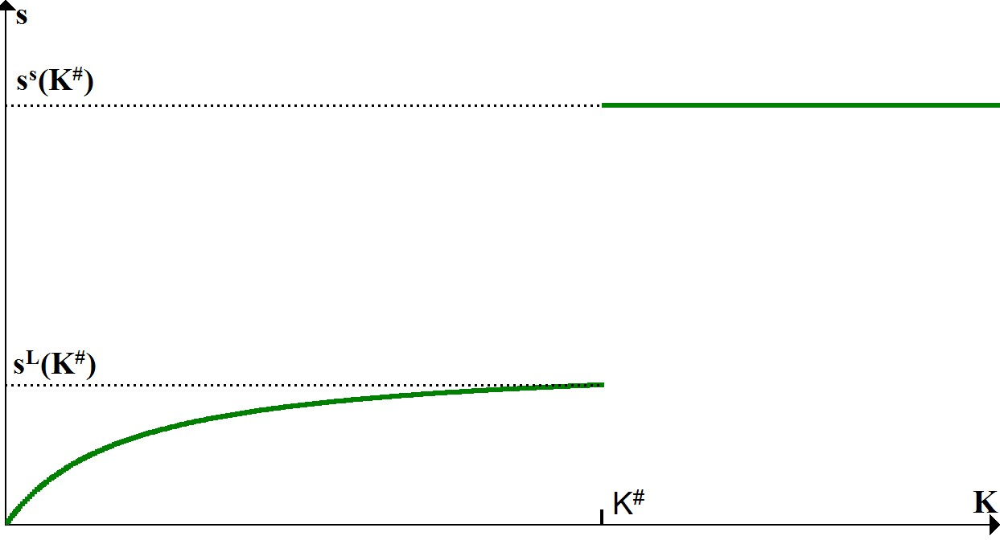
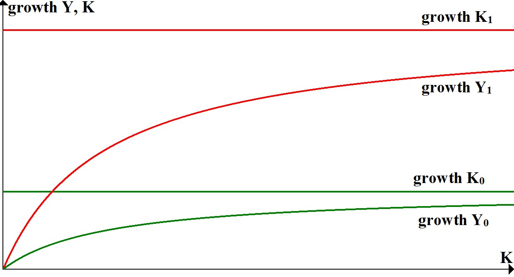

\(s_{Y_m}\): the savings rate as a fraction of \(Y_m\).
\(s_{\pi}\): the savings rate as a fraction of profits.
Figure 1: the savings rate as a function of \(K\).
Adjust Solow Model
What happens when we set \(s_{\pi}^S=s_{\pi}^L\)?
The gap in the savings rate function disappears!
Figure 2: In the Solow range \(s\) shifts downward to the red line.
Adjust Lewis Model I
Instead we could also set \(s_{Y_m}=s^S\).
Now the savings rate over the Lewis range shifts upwards.
Figure 3: In the Lewis range \(s\) shifts upward to the red line.
Figure 4: Comparison of growth rates of Y and K over the Lewis range: savings rate based on profits (green) versus savings rate based on mature income (red).
Adjust Lewis Model II
The last option is to set \(s^L=s^S\).
Again, the savings rate over the Lewis range shifts upwards.
Figure 5: In the Lewis range \(s\) shifts upward to the red line.
Unified Growth from Lewis to Solow
Final Remarks
Here I will finish this presentation.
Like the Latex file, no new commands are required beyond this point.